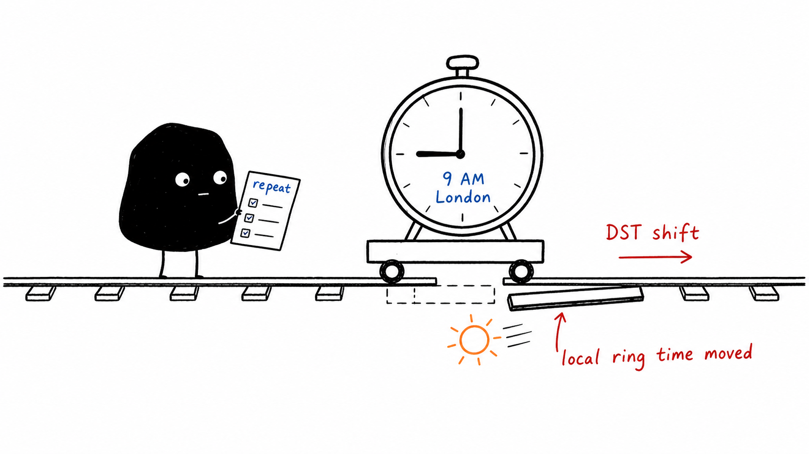
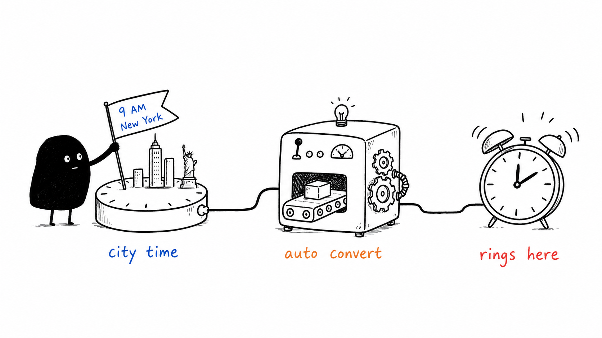

Can iPhone Clock set an alarm for a different time zone?
World Clock displays city times, but the regular alarm editor has no city selector. A Clock alarm is a local clock-time alarm: a 7:00 AM wake-up is intended for 7:00 AM where your device is, rather than 7:00 AM in a separately chosen city.
That is useful for a local morning routine. For a remote standup at 9:00 AM New York time, you need the meeting’s date and New York’s time zone. Adding New York to World Clock does not attach that city to an alarm. Clock does support labels, so you can name a converted alarm “New York call,” but the label does not change its scheduling.

How do you convert a time before setting a Clock alarm?
Record the event’s date and city
Use the city or named time zone provided by the organizer. A current World Clock reading alone does not establish an offset for a future date.
Convert for the actual event date
Check the local equivalent on that date, including whether the event falls on your previous or next calendar day.
Create and label the local alarm
Enter the converted time in Clock. Recheck the conversion when traveling or when either location changes daylight saving time.
This is manageable for a single near-term call. For repeating meetings, offsets can change because countries switch daylight saving time on different dates, or one location does not use it.

How can Calendar schedule an event in another time zone?
Create the event
Open Calendar, add an event, and enter the meeting details.
Choose the event time zone
In the start/end time controls, open Time Zone, search for the city, and select it.
Add an alert
Choose an event alert and check Calendar notification settings. Calendar will display the event in your current zone unless you override the display.
Calendar is useful for invitations and shared meetings. Its alerts are notifications, so check Focus and sound settings if you depend on them. Time Zone Override changes how Calendar displays times; it does not give Clock alarms a city setting.
Source: Apple: schedule Calendar events in another time zone.
How do you set a city-based alarm in Alarm One?
Choose the target city
Use Alarm One’s World Clock alarm controls to select the city the meeting or event belongs to.
Enter the time in that city
For a New York standup, enter 9:00 AM in New York time, without converting it into your device’s local time.
Select the repeat days
If the event repeats, select the relevant weekdays in the target city. Review the upcoming local equivalent before saving.

Alarm One uses the selected city’s time zone to calculate occurrences, including its daylight saving rules. For a one-off release or exam, also read how to set an alarm for a specific date.
Can Shortcuts create a time-zone alarm?
A shortcut can convert a date and create a Clock alarm. That output is still a local Clock alarm, so the shortcut needs to recalculate when the date or location changes. If it creates a reminder instead, it uses notification delivery. The action you choose determines which alert you get.
For ongoing global schedules, keep the event date, target city, repeat days, and upcoming local time visible together.
What should global teams check before a meeting?
- Use a city or named zone: “Eastern time” can be ambiguous without a location.
- Check the date on both sides: a Monday meeting abroad may happen on Sunday locally.
- Check DST transition weeks: Berlin and New York are usually six hours apart, with temporary differences around their clock-change dates.
- Distinguish GMT from city time: GMT is UTC+0; London uses British Summer Time for part of the year.
- Review after travel: confirm the next displayed occurrence when your device’s local zone changes.
What else should you know?
Can an iPhone alarm adjust to a different time zone?
A regular Clock alarm follows device-local clock time and has no separate city setting. Alarm One’s city-based alarm calculates the local equivalent from the selected city’s time zone.
How do I set an alarm for GMT on iPhone?
Use a time zone fixed at UTC+0 or GMT, or convert that event’s GMT time into your local time. Do not assume London is always GMT; it observes British Summer Time.
Is a Calendar time-zone alert the same as an alarm?
Calendar can attach a time zone to an event, but its alert is a notification. Use a city-based alarm when you need an alarm-style alert tied to that location.